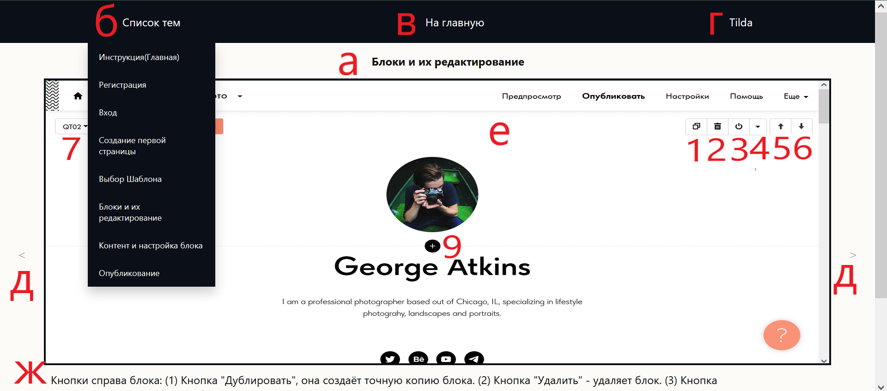

Добро пожаловать. Здесь вы узнаете о том как пошагово создать сайт в Конструкторе сайтов "Tilda". Для создания сайта с нуля, пошагово, нажимайте стрелку в правой области экрана (д) (Также при наведении на область она поменяет цвет). Инструкции (ж) представляют из себя текст со ссылками на скриншоты Tilda, находятся под скриншотами страниц сайта Tilda с пронумерованными элементами (е). Что бы вернуться к предыдущей странице, нажмите на область в левой части экрана (д) (Также при наведении на область она поменяет цвет). Если вам нужен определённый момент посмотрите в списке "Список тем" (б) в верхней части экрана, посередине, там находятся заголовки тем (а). Если вы хотите вернуться в начало инструкции, то нажмите на кнопку "На главную" (в).Если вы хотите попасть на сайт "Tilda", нажмите конопку "Tilda" (г) в правом верхнем углу.
